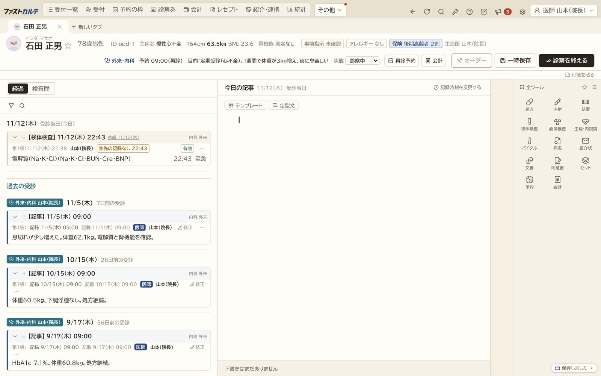
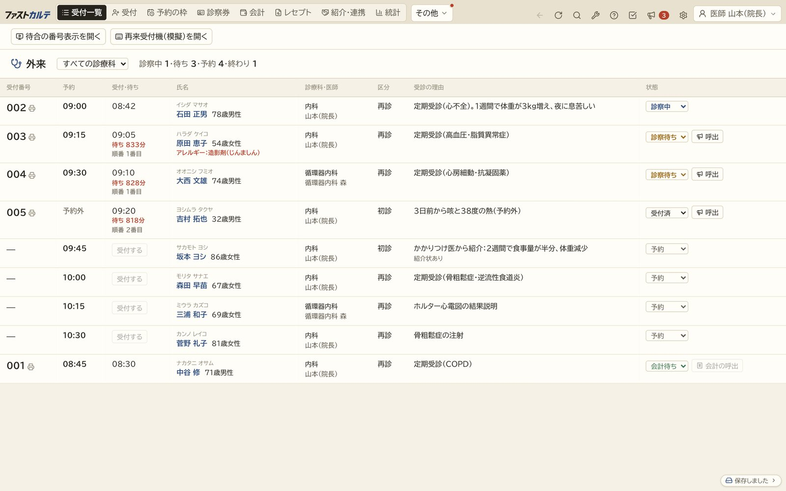
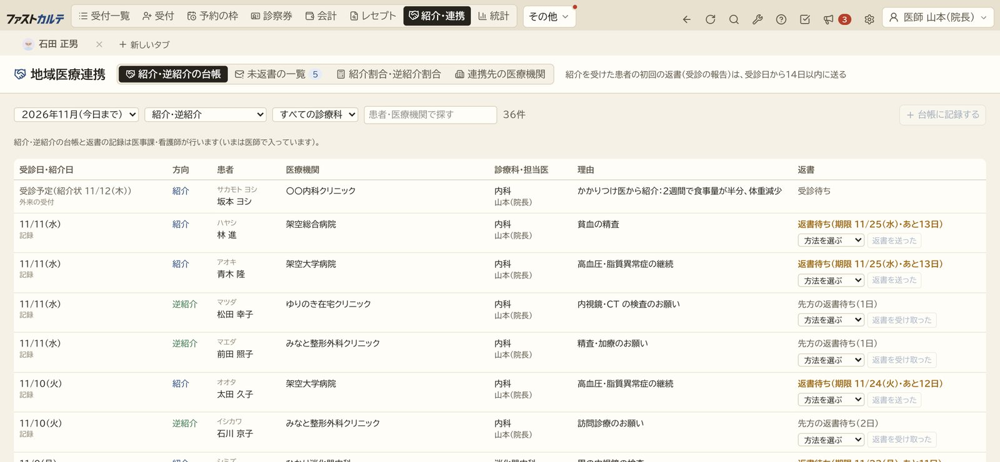
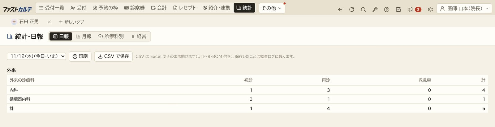

いまお使いのORCAはそのままに、カルテだけをクラウドの電子カルテ「ファストカルテ」に。小規模の開発だからこそ、院に合わせて作り込めます。
いまは先行導入の受付と、架空の記録での試用の段階です。


POINT
いまのORCAとサポート会社の契約は、そのまま続けられます。ORCAの費用も変わりません。切り替えるのはカルテだけです。
2027年3月末までにお申し込みの院は、ご契約が続くかぎり月9,800円（税抜）のまま。初期導入費用も100,000円（税抜）です。
小規模の開発だからこそ、画面・入力欄・文書・受付の流れを院に最適化できます。開発者自身が医師として院で働きながら直すこともできます。
PRICE
料金はカルテの分だけです。ORCAの費用は、いまのまま変わりません。ファストカルテとつなぐために、ORCA側で追加の利用料がかかる仕組みは見当たりません（2020年4月からの料金では、APIの利用の有無で基本利用料は変わりません）。
9,800円/月（税抜）
ご契約が続くかぎり、この金額のままORCAの費用の例：サポート会社の月額サポート料 月17,600円〜。日レセクラウドを使う場合は基本利用料 月2,200円・証明書 月550円など。金額はサポート会社や契約によって違います。
| A社 | B社 | ファストカルテ | |
|---|---|---|---|
| 月額 | 11,800円 | 12,000円〜 | 9,800円 |
| 初期費用 | 0円 | 200,000円〜 | 100,000円 |
| 1年目の合計 | 141,600円 | 344,000円〜 | 217,600円 |
| 5年間の合計 | 708,000円 | 920,000円〜 | 688,000円 |
| ORCAの費用 | 別にかかる | 別にかかる | 別にかかる（いまのまま） |
A社・B社は、ORCAを使い続けてカルテだけを入れるプランの金額です。各社の公式サイトの料金ページの表示によります（2026年11月13日時点。税の表示はありません）。ファストカルテは税抜で、2027年3月末までのお申し込みの金額です。合計はカルテの費用だけで、ORCAの費用はどの社でも別にかかります。機能やサポートの内容は各社で違います。
ORCA
会計の画面に、ORCAとの受け渡しのボタンがあります。二重入力を減らすための仕組みです。ORCAへ送るのは医事課の役割の人で、送った記録は監査ログに残ります。
いまの段階：本物のORCA（試用環境を含む）とは、まだ一度もつないでいません。ORCAの試用環境で確かめてから提供します。WebORCAクラウドのクライアント証明書には対応しました。オンプレミス（院内のサーバー）のORCAは、ファストカルテがクラウドで動くため、院のVPNや院内に置く中継が要ります。この仕組みはまだ無く、先行導入の院と一緒に決めます（いまは未対応）。
FEATURES
受付一覧、待ち時間、呼び出し、診察、会計までを1つの流れで。会計はORCAの計算を使います。
下書きのオーダを左の経過へドラッグして確定。処方は安全チェックつき。
単純写真・CT・MRI・心電図・エコー・内視鏡・生理検査の依頼と記録。
紹介・逆紹介の台帳と返書の期限の管理も。
日報・月報・診療科別の集計。CSVで保存できます。
処方がなくなる日の前の診療日を、次の予約の日付の候補に出します。
文ごとに、もとの記録のどの行から書いたかを示します。数や薬の名前がもとの行に無い文は出しません。氏名・患者番号・電話・日付・住所は置き換えてから、外部のAIサービス（Anthropic の Claude）に送ります。見本ではAIは動きません。
厚生労働省のチェックリストに沿って、院の状況を点検できます。
予診（体温・予診票）と、販売名・ロットの記録。体温37.5℃以上のときや、注射の生ワクチンの間隔（27日）が足りないときなどは、記録できないように止めます。
健診のコース（定期健康診断・雇入時・特定健診・後期高齢者・自費）を選ぶだけでオーダーできます。料金はコースごとに設定します（導入のときに院の価格に合わせます）。会計では保険の分とは別に自費として受け取り、健診だけの受診では保険の初診料・再診料を算定しません。身体診察はテンプレート「健診の診察」で書きます。身長・体重・血圧・血液検査の値はカルテから読み込みます（視力・聴力・尿・胸部X線などは、いまは判定だけを記録）。判定は医師が選びます。特定健診のXML（代行機関への提出）と保健指導の階層化は、これから対応します。
CUSTOM

ファストカルテは、医師が自分で作っている電子カルテです。全院で同じ作りにするのではなく、院の受付や診察室で「ここが使いにくい」と感じたところを、開発者が直接うかがって作り変えます。
画面の並び、入力欄、文書、受付の流れなど、ほかの院向けの共通の機能にはしない調整も行います。
SCREEN
見本の院の画面です。患者・医療機関はすべて架空です。


UPDATE
FLOW
大切なこと：いまは、架空の記録での試用と先行導入の受付までの段階です。実際の患者さんの記録での運用は、接続の試験と院でのご確認を経てからになります。
Q&A
月額9,800円（税抜）です。2027年3月末までにお申し込みの院は、ご契約が続くかぎり月9,800円のままです。初期導入費用は100,000円（税抜）で、2027年4月以降のお申し込みは150,000円（税抜）です。
ORCAの費用はいまのままです。ファストカルテとつなぐために、ORCA側で追加の利用料がかかる仕組みは見当たりません。サポート会社によって料金の決め方が違うため、念のためお使いのサポート会社にもご確認ください。
いまは架空の記録での試用と、先行導入の受付の段階です。院のORCAとの接続の試験を経てから、実際の運用に進みます。
ファストカルテはクラウドで動くため、院内のネットワークにあるORCAにつなぐには、院のVPNや院内に置く中継などの仕組みが要ります。この仕組みはまだ無く、先行導入の院と一緒に決めます。
WebORCAクラウドのクライアント証明書には対応しました。ただし本物のORCAとはまだつないでいないため、ORCAの試用環境で確かめてから提供します。
できます。小規模の開発だからこそ、画面の並びや入力欄、文書、受付の流れを院に合わせて作り込めます。開発者の医師が院に勤務し、診療の現場で使いながら直していくこともできます。勤務の日数や内容は、ご相談のうえで決めます。
ORCAをお使いの無床の診療所です。内科をはじめ、外来中心の院を想定しています。
CONTACT
先行導入・試用のお申し込みは、こちらのフォームから（約1分）。
メールでも受け付けています：info@suzuki-medical-engineering.work